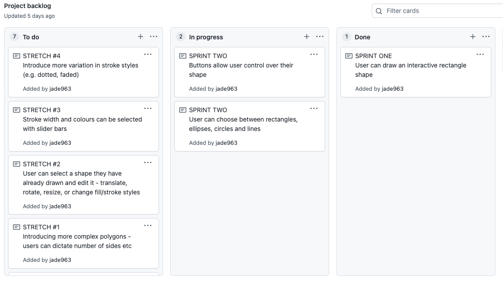
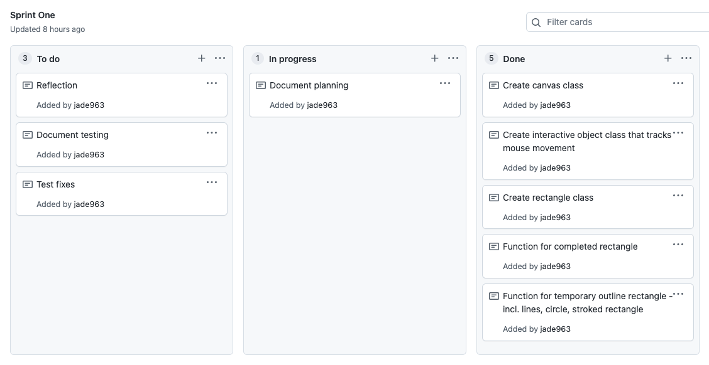
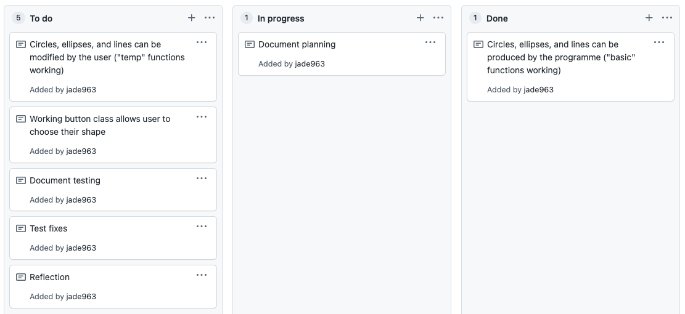
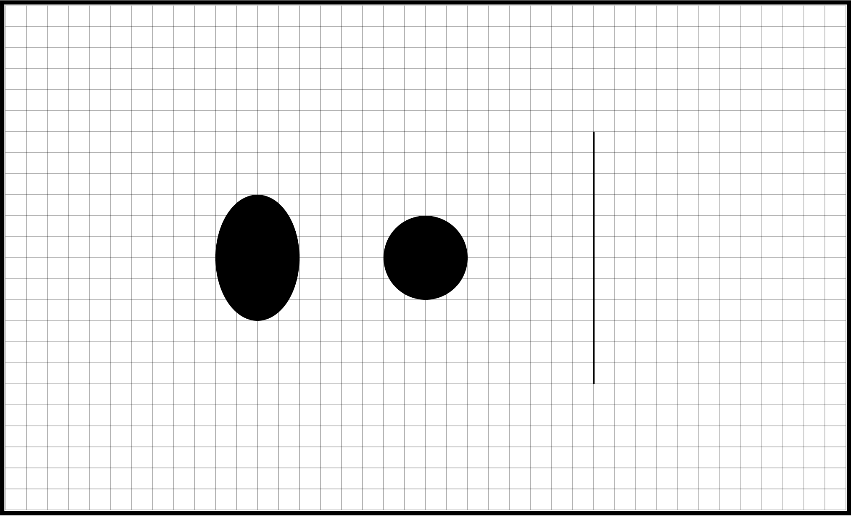
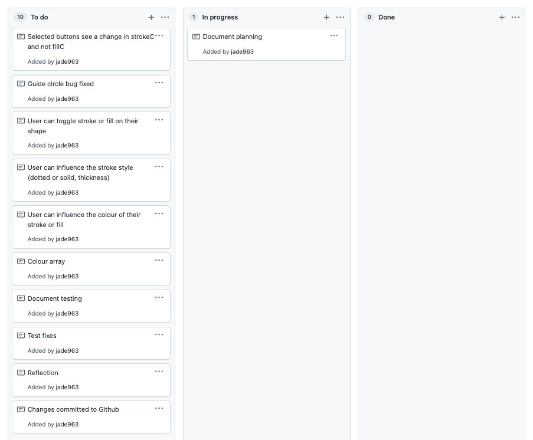
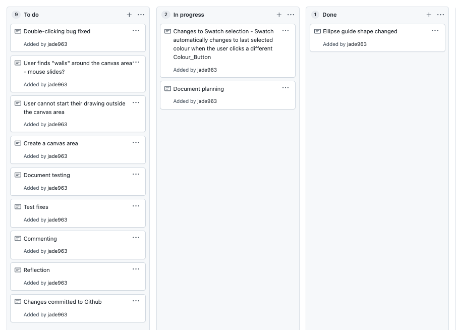

Brief
This project aims to create a basic drawing program after the fashion of Google Draw, for the use of students in schools. The program should allow students to draw customisable shapes and lines. It needs to be based in a canvas environment.
Project Backlog
Sprint One
Aim
By the end of this sprint the program should have a canvas, and the user should be able to click and drag to create a rectangle.
To-do
Planning

Testing
Initial test
This video shows a test of the Sprint One code.
As can be seen, the sprint’s main goal of allowing the user to draw a permanent rectangle on the
canvas has been achieved. However, there are a few bugs.
- The program does not record when the mouse has left the canvas. As a result, if the mouse leaves the canvas while dragging a rectangle, the rectangle disappears. This is confusing and irritating for the user. It seems that it can only be fixed by the addition of strict limits around the drawing area - this is something that will take some consideration and is already planned for a later sprint, so I will leave this bug for now in the interest of prioritising.
-
The “guide” circle in the centre of the temporary rectangle that is shown while the user is
dragging does not resize with the square. While this has no impact on the program’s functionality,
it looks awkward and means that the user is not actually assisted by its presence as intended. I
believe it could be fixed by making the radius responsive to the dimensions of
the rectangle it is contained in, e.g.:
Here, the drawStrokeCircle function (the function for the guide circle) is able to recognise whether the width is less than the height or vice versa, and then make sure its radius stays smaller than it.if(this.h < this.w){ this.r = Math.abs(this.h/10) } else if(this.h > this.w){ this.r = Math.abs(this.w/10) }
Final test
Reflection
As shown in the test above, the fixes applied to bug #2 found in the initial program test have been
successful. Bug #1 has been added to the project backlog to be fixed in a later sprint.
On the
whole
this could be considered a successful sprint. Although the program is still extremely basic, I have a
working canvas and an interactive platform, important fundamentals that will allow me to work on adding
to the program in an efficient way. I have also been able to identify two bugs and fix one of them.
I think the next sprint should give the user more choice
over how they use the program - in its current state, it's pretty boring. To allow the user to choose,
I will have to code buttons and add some very basic shapes to the program's repertoire (e.g. a circle,
line, and ellipse. I already have the code for these as they make up the "guide" shapes, making these
additions quick and easy, allowing me to focus on the more complex code for buttons.)
The buttons are another important fundamental that must work before I can
add any more complicated functions, as this program is intended to be user-oriented and most of the
planned features will simply be providing the user with new options.
Sprint Two
Aim
By the end of this sprint, the user should be able to draw either a rectangle, circle, line or an ellipse using buttons.
To-do
Planning
Testing
Component test #1 - new shapes
This screenshot shows the successful implementation of part one of this sprint - the new shapes, drawn using their "basic" functions.
Component test #2 - drawing new shapes
This video shows an early test of the new shapes added to the program - the ellipse, circle, and line. Although the code is functional, some problems are revealed that interfere with the program's usability.
- Placeholder code has been used at this stage, with the variable "this.choice" deciding
which shape is to be drawn. This will be changed at the next step of this sprint when buttons are
added - since the goal is for the user to be able to make changes without having to change the base
code. because buttons have not yet been added. However, at this stage it is impossible for multiple
shapes to be drawn on the canvas at once, because the page needs to be refreshed each time the
drawing shape is changed.
- It appears that the bug found and fixed in Sprint One, where the guide circle inside the rectangle
did not resize appropriately, was not fixed after all. This is because the code the guide circle uses
to determine whether it should be sized according to the width or the height relied on an equation that
calculated the width/height by subtracting the xMouse or yMouse value from the xStart or yStart
value, then. However, this doesn't work because the user is able to make the width or height
negative by simply dragging the mouse left or up from the Start point. Therefore, if the width is
calculated to be -300, and the height is 30, the computer sees the width as smaller and therefore the
radius resizes to be 1/10 of 300 (30) instead of 1/10 of 30 (3). This problem will require some
consideration and different approaches and there is still a significant amount of work required for this
sprint, so fixing it will be added to the agenda for Sprint Three.
- The final problem is with the guide shapes for the circle. The circle was added so the user had an option of creating the "perfect" shape, as an alternative to the ellipse. However, there is no equivalent "perfect" guide shape (which would be a square) to match it. The rectangle as its guide shape does not resize appropriately to the circle, because the width and the height are different.
Circle - error correction

Final verdict
After solutions 1 and 2 proved unsuccessful, I began planning for solution #3, or the square function. However, during this time I realised that even a successful square or circle would be very restrictive to the user's freedom of movement, because it can only be expanded or contracted along a diagonal centre-line. This is true of squares even in programs such as Google Draw; by nature, the "perfect" shape is restrictive. I have decided, therefore, to scrap both the square and the circle functions. I believe the purpose of these functions can be much more efficiently served by the user simply choosing the rectangle or ellipse option, and if necessary use the grid as a guide to attain their desired proportions. Meanwhile, the user will not have to deal with the irritation of strict limits being placed on their range of movement - something that is rather the antithesis of the theoretical freedom a drawing program should allow.
Component test #3 - buttons
This short video shows the buttons, still without any significant functionality, successfully recognising (changing colour) when the mouse is inBounds and when the button is selected.
Final test
Reflection
As shown in the test above, the goals of this sprint have been met - the program now has a working
button class as well as ellipse and line functions, although the intended circle class was scrapped.
To be fixed in the next sprint is the problem with the guide circle found when a rectangle is
being drawn. The cause has been identified, and the fix will be part of the planning for sprint three.
In terms of general extension of the program, the next steps for this program are to allow the
user the option
not just to choose their shapes, but to choose the characteristics of those shapes - in sprint three,
they should be able to toggle stroke & fill and have some influence over stroke and fill styles.
While reviewing the test, a few possible improvements have occurred to me.
First, there should be
more differentiation between
the "guide shapes" that the user sees while drawing a shape and the temporary outline of the actual
shape - perhaps this could be differentiated by having the guide shapes as dotted lines, and the
temporary version of the final shape as a solid one.
Second, there is currently no stroked edge around a button, and a selected button is indicated by a
transparent fill shade. However, the plan for this sprint is to offer the user with a colour palette
that allows them to choose the colour they want. If the appearance of a selected button is indicated
by changing the colour of the button, this may cause confusion. Therefore, I would like to alter
this functionality in the next sprint by adding a stroke around the buttons whenever the button is
selected, instead - this will align nicely with the main goal of the sprint.
Sprint Three
Aim
By the end of this sprint, the user should be able to toggle stroke & fill for their shapes, & dictate their colour. I also aim to solve a couple of minor glitches held over from the previous sprint.
To-do
Planning
Testing
Component test #1 - changes to button selection
This video shows the working change in button selection.
Component test #2 - guide circle bug fix
This video shows the successful bug fix, using the planned code.
Component test #3 - colour palette
This video shows the semi-successful implementation of the colour palette - it appears that you have to click twice to get anything to appear at all on the screen, which was not a problem in sprint two. This will be added to the to-do list for this sprint, to be corrected at the end.
Component test #4 - "Togglers"
The implementation of the "Toggler" class has been completed with partial success. The "Toggle" switches themselves work fine as essentially a rework of the button class, with some alterations to ensure that the Togglers are independent objects (so that more than one Toggler can be selected at a time.) When stroke or fill is "on", they are highlighted and the text changes to reflect the status. Unfortunately, the code used in class Main to pass the information from the Togglers on to the draw() function doesn't actually work, and using the Togglers has no influence over stroke or fill. As shown by the console log, none of the code currently being used (see screenshot on the left above) is actually being received by the program. As can be seen from the red errors in the console log, the problem is being caused by the program's inability to understand and interpret "Toggler.selected.type", a component of the while loops used here. To double-check this, I replaced the entire block of code pictured with the statements:
this.fillChoice = false
this.strokeChoice = true
This attained the desired result of a stroked box with no fill, which means that the problem
is certainly located inside the class Main code, and not the code in the Toggler class.
Because this component is not working and will therefore require time and planning to
complete, I will bump one of the remaining components for this sprint, which would allow
the user to influence the width and style of their shape's stroke. This will be added to the
project backlog at a later date. However, the other planned component, allowing the user to
change stroke as well as fill colour, will remain as it should theoretically only need a few
lines of code to implement. One possibility for the current glitch is that the code calls "Toggler.selected", even when both Togglers are selected at once; as a result, when is asked to find which Toggler it is by identifying whether .type === "Fill" or "Stroke, it gets stuck at trying to figure out how to find "Toggler.selected". More specificity may be needed, therefore, I tested the following:
console.log(TStroke.status)
console.log(TFill.status)
"TStroke.status" and "TFill.status" were correctly printed in the console log. This means
that "Toggler.selected" can be replaced with either "TStroke" or "TFill", and the "while"
loop currently being used will be obsolete and can be replaced with a series of "if"
statements, e.g.:
if (TStroke.status === "on"){
this.strokeChoice = true;
}
else if (TStroke.status === "off"){
this.strokeChoice = false;
}
if (TFill.status === "on"){
this.fillChoice = true;
}
else if (TFill.status === "off"){
this.fillChoice = false;
}
Test - Togglers bug fix
This video shows the successful bug fix, using the planned code. The "Toggler" component of this sprint is now complete.
Component test #5 - the Colour_Button class
This video shows the new Colour_Buttons working with the code above - clearly, there are pre-set fill and stroke colours, which the program is intended to default to at the beginning when neither of the Colour_Buttons has been selected. This also prevents undeclared variable errors. However, as can be seen occurring in the video, when the user changes the fill colour after changing the stroke colour with the buttons, the stroke colour reverts to the pre-set colour while the fill colour changes as it should. This was an oversight of my planning; clearly, there will need to be a method of storing the colour that the fill or stroke has been changed to. The easiest way to do this in my mind would be by implementing an array to which fill or stroke information is added every time one of the Colour_Buttons is clicked, e.g.: (the following in addition to adding this.strokeSet, this.fillSet, this.strokeColour and this.fillColour variables in the constructor)
if (this.edit_colourChoice === "Edit stroke colour"){
strokeColour = Swatch.selected.fillC
this.strokeSet = [strokeColour]
fillColour = this.fillSet[0]
}
else if (this.edit_colourChoice === "Edit fill colour"){
fillColour = Swatch.selected.fillC
this.fillSet = [fillColour]
strokeColour = this.strokeSet[0]
}
Final test - Colour_Button bug fix
This video shows the Colour_Button class, finally working, using the suggested code above.
Reflections
As shown in the test above, with the Colour_Button fixed, four out of five of the sprint's original goals have been met, with one of the planned components being dropped due to unexpected setbacks while working on components four and five. This will be returned to the project backlog where it will be added in a later sprint.The program now allows the user to toggle stroke and fill for a shape and choose both its stroke and fill colours. I am mostly happy with the approach I used in this sprint; most of the problems were caused by oversights or mistakes in the plannings and not altogether misguided approaches. There is one remaining bug, in that when the program is first booted up, you need to click once before the program begins drawing. I am assuming this is a problem with the code in the "Main" control class, and will review possible causes before planning my next sprint, with the intent to fix this problem sometime in Sprint Four.
The plan for Sprint Four is to introduce a smaller "drawing area" to the right of the "dashboard" area so that the user's controls and their canvas are separate. This is not only visually more convenient, but will prevent the irritating occurrence of shapes being drawn accidentally when the user clicks on a button/swatch/toggler etc., something that happens regularly and may cause confusion for the user.
While testing this sprint, I have also had several thoughts about how to make this program better in the future. First of all, there should be some changes made to the "guide" shapes - in the last sprint I suggested that they should have dashed edges instead of solid ones, to convey their impermanence. I still think this; now I also believe that the colour of the guide shapes should be a transparent version of colour the shape will turn out to be. This is something I will look at in a sprint of its own. Another aspect I believe could be improved is the guide shape for the ellipse; having two lines form an 'X' shape instead of a '+' is much less helpful, and this is a very small, easy-to-fix detail that I can change in my next sprint. It has also occurred to be that it would be helpful if when the user pressed one of the Colour_Buttons, the Swatch automatically returned to the colour it was before. This should also be fairly quick to add at the beginning of my next sprint.
Sprint Four
Aim
The aim of this sprint is to implement a designated "drawing area", outside which the user cannot draw. Fixes from the last sprint are modifying the ellipse and making changes to Swatch selection as described in the Sprint Three reflection, as well as identifying the cause of the "double-clicking" issue and hopefully making plans to prevent it.
To-do
Planning


Link to the canvas Page
Testing
Component test #1 - change to the ellipse guide shapes
This video shows the successful change to the ellipse guide shapes, as well as a Line that has been added in preparation for the next component (strict drawing canvas boundaries) to more clearly delineate the borders of the canvas.
Component test #2 - canvas boundaries
This video shows the first attempt at creating clear boundaries to the canvas, using the planned ctx.clip() function inside Main.update(). However, this is not working perfectly: although there are boundaries, and a shape cannot be started outside of the designated drawing area, if the mouse goes up while out of bounds, the shape cannot be completed, even though the guide drawing continues to follow the mouse's movement. This is almost as confusing for the user as the previous version. I decided to explore my options: one idea was to call mUp() early if the mouse went out of bounds, so that if the program is no longer able to track the mouse's movement, it simply draws the final version of the shape. This is the product of that idea:
if (w > 0 && w > (1000-x)){
console.log("Positive width went out of bounds")
this.mUp()
}
else if (w < 0 && Math.abs(w) > (x-278)){
console.log("Negative width went out of bounds")
this.mUp()
}
else if (h > 0 && h > (600-y)){
console.log("Positive width went out of bounds")
this.mUp()
}
else if (h < 0 && Math.abs(h) > y){
console.log("Negative width went out of bounds")
this.mUp()
}
As we can see from the test above, this fix isn't perfect. For it to work, there has to be some way of preventing mUp from running a second time - which I believe could be done fairly easily. but I would prefer to be certain that this is the best method before refining it any further. Again, it has the problem that it may annoy or confuse the user - however, I think this could be mitigated if there was an undo button, as is planned to be implemented in the next sprint.
Final verdict
Upon reviewing both of these methods I have decided the best path forward is to combine them.
I have left the ctx.clip() in mUp.update() - so a shape cannot be drawn in the button area - but I
have also decided to continue calling mUp() (which makes the shape finish automatically)
whenever the mouse leaves the canvas (not just the drawing area, but the whole area where the
mouse is tracked by the program.)
Another problem that has been revealed as part of this testing is that when the mouse goes Up over a
button, that button thinks it has been selected; I believe this can be fixed easily by adding a
boolean variable to the Button classes that uses the existing getBoundary() function to register
"false" if the mouse went down in the drawing area. If this variable is "false", the buttons
will not select when the mouse goes Up over it. If the variable is "true" - meaning the user's
mouse went down inside the button/control area - the button is able to be clicked.
Final test - button selection bug fix and boundaries, take 3
Reflections
As shown in the video above, with the implementation of the suggested fixes after the third test,
nearly all of this sprint's goals have been met. I was able to implement boundaries around the
canvas, change the "guide shape" for the Ellipse, and fix the bug where the canvas expected to be
clicked at least once before producing anything simply by replacing Main.mClick with Main.mDown
(this was not documented). I did decide to send the change to Swatch selection back to the project
backlog, to be worked on in a later sprint; this is because it did not immediately work as planned
when I attempted to implement it, and it was not high priority enough to waste time arguing with.
The most important goals of this sprint have been reached; the bug fix, the guide shape, and
especially the boundaries previously created confusing situations for the user which have now
very much been addressed. There were far fewer setbacks in this sprint than in Sprint Three,
due to its less ambitious
scope; I plan to replicate this approach in Sprint Five.
The next goal for this project is to implement Clear and Undo buttons. These were always planned,
but my decision to create an automatic mUp() whenever the user's mouse went outside of the
boundaries makes it considerably more urgent that they be added; this is because the user may
accidentally go out of bounds, and they must be able to fix this so that their drawing is not ruined
by this mistake.
Sprint Five
Aim
To-do
Planning
Link to the canvas Page
Testing
Reflections
Sprint Five
Aim
To-do
Planning
Link to the canvas Page
Testing
Reflections
Sprint Five
Aim
To-do
Planning
Link to the canvas Page
Testing
Reflections
Relevant Implications Summary
GITHUB INSTRUCTIONS
cd to directory
git status
git add .
git commit -a -m 'message'
git push -u origin
Example code insert (don't do too much of this)
function inBoundsCheck(xM, yM, x, y, w, h){
if( xM > x && xM < x+w && yM > y && yM < y+h){
return true;
}else{
return false;
}
}
Video Test Example
I hate you WebStorm
Example image placements
For images to be responsive (so that they will rescale to suit the width of the parent, use the .img-responsive class.


I hate you WebStorm, I hate you WebStorm,I hate you WebStorm
I hate you WebStorm, I hate you WebStorm, I hate you WebStorm
Unordered list
Unordered lists are used to markup lists where list items do not require numbering.
- UI hate you WebStorm
- I hate you WebStorm
Ordered list
Ordered lists are used to markup lists where list items require numbering.
- I hate you WebStorm
- I hate you WebStorm
Unstyled list
You can make the list unstyled using the list-unstyled class.
- I hate you WebStorm
- I hate you WebStorm
Inline list
You can make the list display inline using the list-inline class.
- One
- Two
- Three
- Four
Buttons
You can apply the btn class to any element that requires a button style.